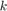
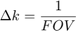
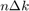
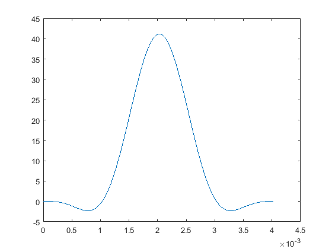

Create a gradient echo sequence and export for execution
The Sequence class provides functionality to create magnetic resonance sequences (MRI or NMR) from basic building blocks.
This provides an implementation of the open file format for MR sequences described here: http://pulseq.github.io/specification.pdf
This example performs the following steps:
- Create slice selective RF pulse for imaging.
- Create readout gradient and phase encode strategy.
- Loop through phase encoding and generate sequence blocks.
- Write the sequence to an open file format suitable for execution on a scanner.
Contents
Instantiation and gradient limits
The system gradient limits can be specified in various units mT/m, Hz/cm, or Hz/m. However the limits will be stored internally in units of Hz/m for amplitude and Hz/m/s for slew. Unspecificied hardware parameters will be assigned default values.
system = mr.opts('MaxGrad',30,'GradUnit','mT/m',... 'MaxSlew',170,'SlewUnit','T/m/s')
system =
maxGrad: 1277280
maxSlew: 7.2379e+09
riseTime: []
rfDeadTime: 0
adcDeadTime: 0
rfRasterTime: 1.0000e-06
gradRasterTime: 1.0000e-05
A new sequence object is created by calling the class constructor.
seq=mr.Sequence(system);
Sequence events
Some sequence parameters are defined using standard MATLAB variables
fov=220e-3; Nx=64; Ny=64; sliceThickness=5e-3;
Slice selection
Key concepts in the sequence description are blocks and events. Blocks describe a group of events that are executed simultaneously. This hierarchical structure means that one event can be used in multiple blocks, a common occurrence in MR sequences, particularly in imaging sequences.
First, a slice selective RF pulse (and corresponding slice gradient) can be generated using the makeSincPulse function.
flip=15*pi/180; [rf, gz] = mr.makeSincPulse(flip,system,'Duration',4e-3,... 'SliceThickness',sliceThickness,'apodization',0.5,'timeBwProduct',4); figure plot(rf.t,real(rf.signal))
Readout gradient
To define the remaining encoding gradients we need to calculate the -space sampling. The Fourier relationship

Therefore the area of the readout gradient is .
deltak=1/fov; kWidth = Nx*deltak; readoutTime = 6.4e-3; gx = mr.makeTrapezoid('x',system,'FlatArea',kWidth,'FlatTime',readoutTime); adc = mr.makeAdc(Nx,'Duration',gx.flatTime,'Delay',gx.riseTime);
Phase encoding
To move the -space trajectory away from 0 prior to the readout a prephasing gradient must be used. Furthermore rephasing of the slice select gradient is required.
gxPre = mr.makeTrapezoid('x',system,'Area',-gx.area/2,'Duration',2e-3); gzReph = mr.makeTrapezoid('z',system,'Area',-gz.area/2,'Duration',2e-3); phaseAreas = ((0:Ny-1)-Ny/2)*deltak;
Calculate timing
delayTE=10e-3 - mr.calcDuration(gxPre) - mr.calcDuration(rf)/2 ... - mr.calcDuration(gx)/2; delayTR=20e-3 - mr.calcDuration(gxPre) - mr.calcDuration(rf) ... - mr.calcDuration(gx) - delayTE; delay1 = mr.makeDelay(delayTE); delay2 = mr.makeDelay(delayTR);
Define sequence blocks
Next, the blocks are put together to form the sequence
for i=1:Ny seq.addBlock(rf,gz); gyPre = mr.makeTrapezoid('y',system,'Area',phaseAreas(i),'Duration',2e-3); seq.addBlock(gxPre,gyPre,gzReph); seq.addBlock(delay1); seq.addBlock(gx,adc); seq.addBlock(delay2) end
Write to file
The sequence is written to file in compressed form according to the file format specification using the write method.
seq.write('external.seq')
Display the first few lines of the output file
s=fileread('external.seq');
disp(s(1:309))
# Pulseq sequence file # Created by MATLAB mr toolbox # Format of blocks: # # D RF GX GY GZ ADC [BLOCKS] 1 0 1 0 0 1 0 2 0 0 2 3 4 0 3 1 0 0 0 0 0 4 0 0 5 0 0 1 5 2 0 0 0 0 0 6 0 1 0 0 1 0 7 0 0 2 6 4 0 8 1 0 0 0 0